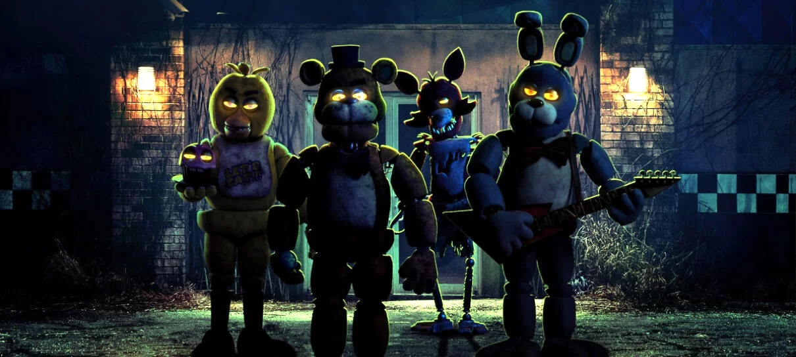

Five Nights at Freddy's, abreviado como FNaF, é uma popular série de jogos de terror criada por Scott Cawthon. O jogo se passa em uma pizzaria fictícia chamada Freddy Fazbear's Pizza, onde o jogador assume o papel de um guarda noturno encarregado de monitorar as câmeras de segurança e manter os animatrônicos do local longe do escritório. A tensão cresce a cada noite, à medida que os animatrônicos ganham vida e tentam se aproximar do jogador. Com uma narrativa complexa e enredos sombrios, Five Nights at Freddy's conquistou uma legião de fãs e inspirou uma série de livros, brinquedos e até mesmo um filme em desenvolvimento.
A série FNaF é conhecida por seu estilo único de horror e suas mecânicas de jogo simples, mas eficazes. Cada jogo da franquia oferece uma experiência de terror única, à medida que os jogadores tentam sobreviver às noites em meio a uma atmosfera de suspense e jumpscares imprevisíveis. A série também se destaca por sua mitologia intrigante e personagens memoráveis, o que a tornou um marco no mundo dos jogos de terror e uma referência importante no gênero.
Atualmente existem 10 jogos dentro da franquia de Five Nights at Freddy's, sendo eles: